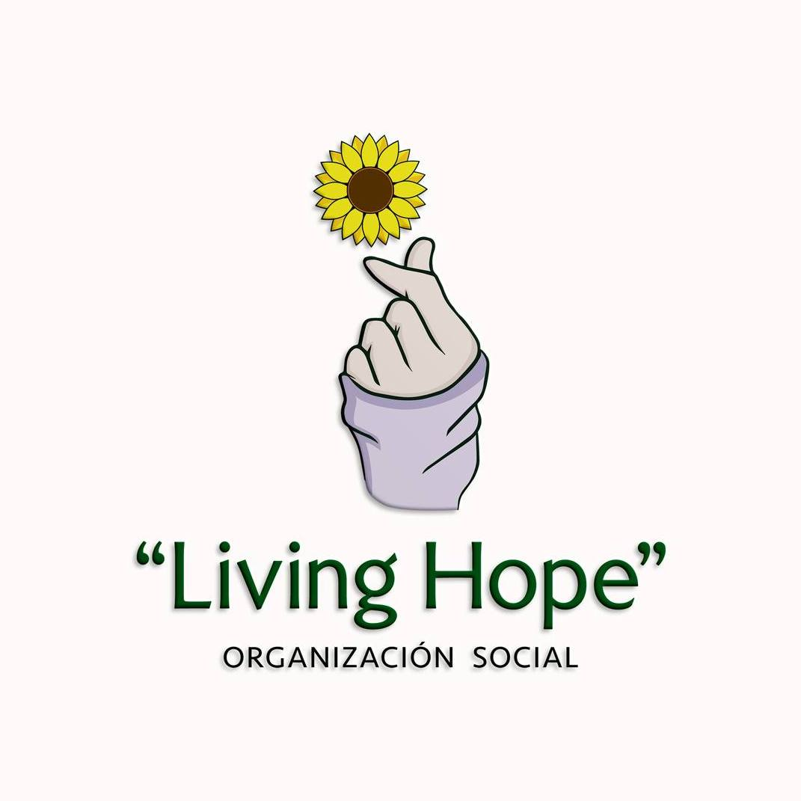

Con esperanza y solidaridad para todos
Living Hope busca impactar positivamente a las comunidades mediante proyectos sociales, educativos y humanitarios que promuevan el desarrollo integral de las personas.
Gracias a personas como tú, podemos llevar alimentos, educación y esperanza a quienes más lo necesitan. Cada donación transforma una realidad.
Donar Ahora